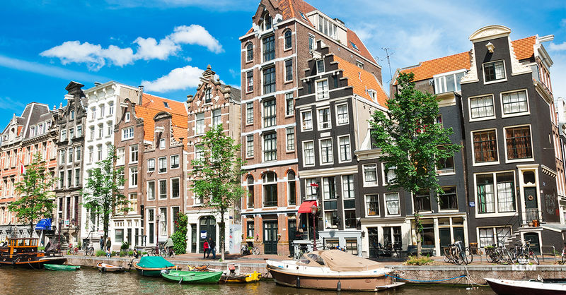

7 motive ca să alegi o vacanță în Olanda!
Olanda este o lume aparte. Dintr-o tara mica s-au raspandit in toate continentele corabieri de seama, negustori de renume, exploratori, artisti plastici de faima europeana, mestesugari. Se cunoaste faptul ca Olanda este Tara Florilor. Un buchet de 50 lalele costa acolo 5 euro.
Cel mai raspandit mijloc de locomotie in Olanda este bicicleta. In intreaga tara exista 16 milioane de biciclete, iar in Amsterdam numarul bicicleteor depaseste numarul locuitorilor.
In Olanda exista nu mai putin de 1.000 de muzee, numar foarte mare in raport cu populatia de 16 milioane de locuitori. Fireste, principalii vizitatori sunt strainii, care au ce vedea.
Olanda este una din cele mai mari producatoare de bere din lume. Aici se afla renumitele branduri Heineken, Grolsch si Amstel. Cu toate acestea, olandezii prefera berea din Germania, Republica Ceha si Belgia.
Parcul olandez Tulip Keukenhoff este considerat ca fiind cel mai fotografiat loc din lume.
Olandezii sunt printre cei mai sanatosi cetateni ai Europei. Cu toate acestea, multi dintre ei nu obisnuiesc sa manance zilnic feluri gatite, limitindu-se la sandvisuri cu branza, tartine sau produse preambalate.
In Olanda, prostitutia este legala si supusa impozitarii, ca orice alta profesie, totodata, legea olandeza permite oricarui cetatean sa cultive cinci tufe de canabis, dar numai pentru uz personal.